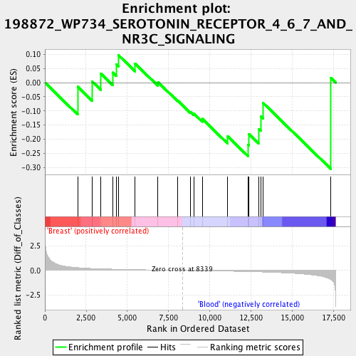
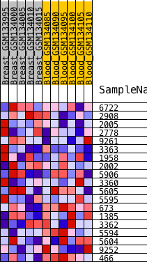
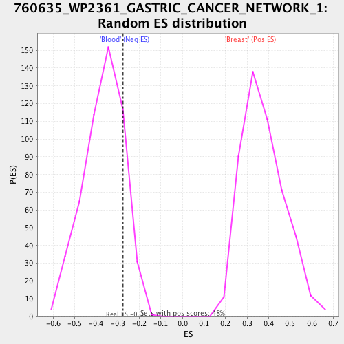

| | | Dataset | Blood_vs_Breast.Blood_vs_Breast |
| Phenotype | Blood_vs_Breast.cls |
| Upregulated in class | Blood |
| GeneSet | 198872_WP734_SEROTONIN_RECEPTOR_4_6_7_AND_NR3C_SIGNALING |
| Enrichment Score (ES) | -0.30543128 |
| Normalized Enrichment Score (NES) | -0.75271136 |
| Nominal p-value | 0.81128407 |
| FDR q-value | 0.93756086 |
| FWER p-Value | 1.0 |
Table: GSEA Results Summary

Fig 1: Enrichment plot: 198872_WP734_SEROTONIN_RECEPTOR_4_6_7_AND_NR3C_SIGNALING
Profile of the Running ES Score & Positions of GeneSet Members on the Rank Ordered List
| PROBE | DESCRIPTION
(from dataset) | GENE SYMBOL | GENE_TITLE | RANK IN GENE LIST | RANK METRIC SCORE | RUNNING ES | CORE ENRICHMENT | | 1 | 6722 | SRF | | | 1986 | 0.283 | -0.0144 | No |
| 2 | 2908 | NR3C1 | | | 2873 | 0.196 | 0.0036 | No |
| 3 | 2005 | ELK4 | | | 3398 | 0.165 | 0.0313 | No |
| 4 | 2778 | GNAS | | | 4116 | 0.129 | 0.0354 | No |
| 5 | 9261 | MAPKAPK2 | | | 4330 | 0.119 | 0.0648 | No |
| 6 | 3363 | HTR7 | | | 4466 | 0.114 | 0.0968 | No |
| 7 | 1958 | EGR1 | | | 5466 | 0.079 | 0.0676 | No |
| 8 | 2002 | ELK1 | | | 6863 | 0.038 | 0.0017 | No |
| 9 | 5906 | RAP1A | | | 8054 | 0.007 | -0.0635 | No |
| 10 | 3360 | HTR4 | | | 8834 | -0.012 | -0.1035 | No |
| 11 | 5605 | MAP2K2 | | | 9027 | -0.016 | -0.1087 | No |
| 12 | 5595 | MAPK3 | | | 9549 | -0.030 | -0.1280 | No |
| 13 | 673 | BRAF | | | 11073 | -0.073 | -0.1889 | No |
| 14 | 1385 | CREB1 | | | 12343 | -0.117 | -0.2203 | Yes |
| 15 | 3362 | HTR6 | | | 12385 | -0.118 | -0.1815 | Yes |
| 16 | 5594 | MAPK1 | | | 12985 | -0.146 | -0.1649 | Yes |
| 17 | 5604 | MAP2K1 | | | 13092 | -0.151 | -0.1185 | Yes |
| 18 | 9252 | RPS6KA5 | | | 13235 | -0.158 | -0.0717 | Yes |
| 19 | 466 | ATF1 | | | 17357 | -0.926 | 0.0164 | Yes |
Table: GSEA details [plain text format]

Fig 2: 198872_WP734_SEROTONIN_RECEPTOR_4_6_7_AND_NR3C_SIGNALING
Blue-Pink O' Gram in the Space of the Analyzed GeneSet

Fig 3: 198872_WP734_SEROTONIN_RECEPTOR_4_6_7_AND_NR3C_SIGNALING: Random ES distribution
Gene set null distribution of ES for 198872_WP734_SEROTONIN_RECEPTOR_4_6_7_AND_NR3C_SIGNALING